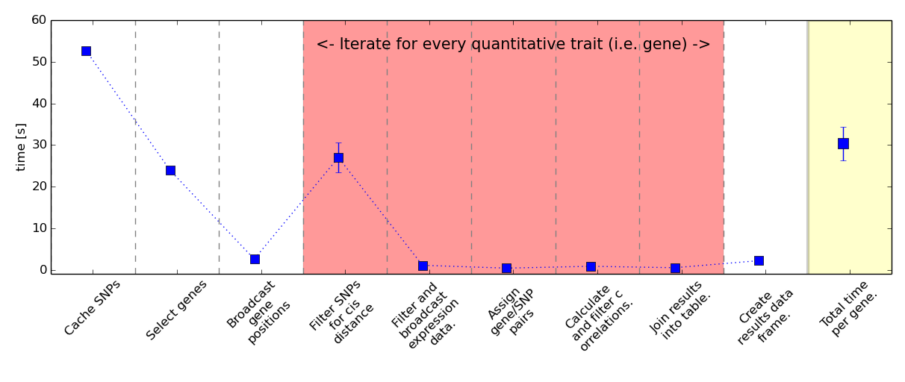
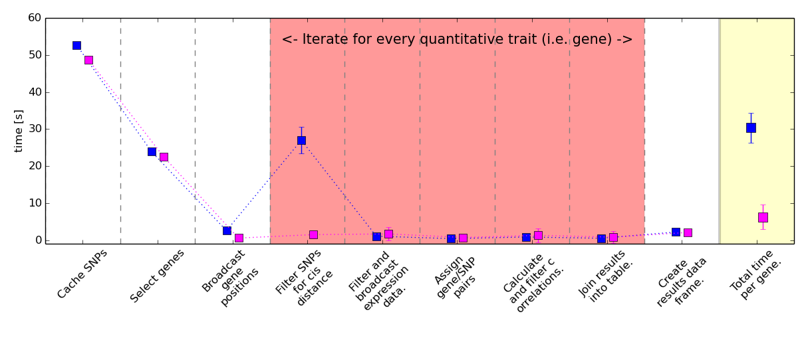

##fileformat=VCFv4.1 ##dummy example of a genotype file #CHROM POS ID REF ALT QUAL HG1 HG2 HG3 HG4 ... 22 160575 rs58769 A G PASS 1|0 0|0 0|0 0|0 ... 22 160576 rs58762 G A,C PASS 0|0 2|2 0|0 0|0 ... 22 160577 rs58763 C TATA PASS 1|1 0|0 0|0 0|1 ... 22 160578 rs58764 C T PASS 0|0 0|0 0|0 0|0 ... 22 160579 rs58767 C A PASS 0|0 0|0 0|0 0|0 ...
Clean up comments and columns
genotype = spark.textFile('input.txt') genotype = genotype.filter(lambda row: row[0] != '#').map(lambda row: row.split('\t'))
If we force computation, the output reads:
[[22, 160575, 'rs58769', 'A', 'G', 'PASS', '1|0', '0|0','0|0','0|0'] [22, 160576, 'rs58762', 'G', 'A,C', 'PASS', '0|0', '2|2','0|0','0|0'] [22, 160577, 'rs58763', 'C', 'TATA', 'PASS', '1|1', '0|0','0|0','0|1'] [22, 160578, 'rs58764', 'C', 'T', 'PASS', '0|0', '0|0','0|0','0|0'] [22, 160579, 'rs58767', 'C', 'A', 'PASS', '0|0', '0|0','0|0','0|0']]
Find a particular SNP
SNP_df.filter(SNP_df.POS == 160576).show()
POS ID REFtoALT HG1 HG2 HG3 HG4 HG5 HG6 HG7 HG8 ... 160576 rs58769 GtoA 0 0 0 0 0 0 0 0 ... 160576 rs58769 GtoC 0 0 0 0 0 0 0 0 ...
Find polymorphisms for a particular sample
SNP_df.where(SNP_df[HG7] >= 1).show()
POS ID REFtoALT HG1 HG2 HG3 HG4 HG5 HG6 HG7 HG8 ... 160577 rs58764 CtoTATA 2 0 0 1 0 1 1 0 ... 160581 rs58768 GtoACG 1 0 1 0 1 0 2 0 ...
Iterate for every gene:
4. Join results into data frame.
Genotype and expression data have been loaded into data frames.
gene_ids = 'all' eQTLs = cartesian_product_method(SNP_df, exp_df, gene_ids,max_distance=1e6,\ sign_level = .75, Noutname = 'my_eQTL_analysis.out') eQTLs.show()
… wait a minute …
CHROM ENTREZ_ID SNP_POSITION REFtoALT CORR chr15 1033415 16051 GtoACG 0.7368807 chr15 1033415 16055 AtoG 0.6830418 chr15 1033422 16055 AtoG 0.6285847 chr15 1033422 16059 CtoA 0.6669201 chr15 1033415 16075 AtoG 0.7927461 chr15 1033415 16059 CtoA 0.5015037 chr15 1033422 16050 CtoA 0.6285847 chr15 1033415 16050 CtoA 0.8927461 chr15 1033423 16055 AtoG 0.6175155 chr15 1033423 16059 CtoA 0.7690654 chr15 1033423 16050 CtoA 0.6175155


% #+ REVEAL: split